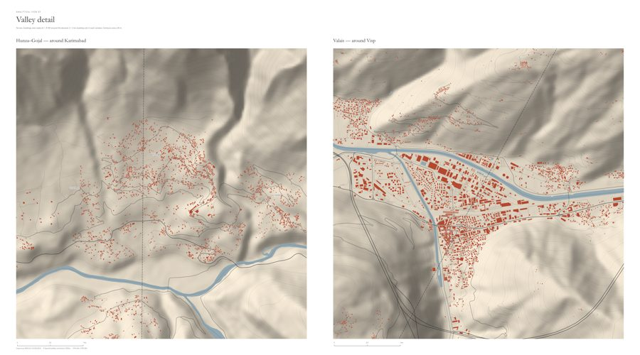

REGISTER OF STUDY
THE STUDENT SHOWN BELOW IS ENTERED
ON THE ROLL OF DISTINCTION
- SEP 2024 M.ARCH · NUST
- AUG 2021 B.ARCH · PU
- 2021 PCATP · REG.
Archive / Drawer 00 / Registry / Profile
This repository holds the working record of an architect who moved from designing shelter after floods to asking what our maps, datasets and models can — and cannot — say about the people who live with flood risk. Each item is catalogued by place, source and evidential status.
The artifacts below are fragments drawn from fieldwork, spatial analysis and experiments with human-centred AI. Drag them, shuffle them, or select any item to read its label. Where evidence runs out, the record says so: unobserved, unsupported, or unanswerable are kept as first-class entries.
REGISTER OF STUDY
THE STUDENT SHOWN BELOW IS ENTERED
ON THE ROLL OF DISTINCTION
RAJANPUR
PUNJAB, PK
Transitional
shelter after
rural flooding
HISTORICAL MEASUREMENT — BUILT FOOTPRINT, km²
DHAKA · GHS-BUILT-S · JRC GSW · SRTM

F07 — buildings & roads by flood state
NETWORKX · DIJKSTRA · 4.8 km/h

V3 — valley details, Hunza / Valais
EVIDENCE STATUS SLIP
HHI · No. 0020 · VALIDATOR
Archive / Drawer 01 / Research
My research asks what an AI-supported planning system should do when spatial datasets, institutional knowledge and community knowledge give different accounts of climate risk. Flooding is the case; the contribution is about how evidence, uncertainty and human judgement work together.
It began in Rajanpur, where two households exposed to the same flood followed very different recovery paths. It continued through GIS, where data can make vulnerability visible while hiding its uncertainties — and now through HHI, an experiment in teaching AI epistemic restraint.
Interactive · HHI evidence classifier
HHI separates deterministic spatial computation from model interpretation, then checks every AI claim against an independent validator with twenty named failure modes. Pick a status to see how a claim about the 2022 floods would be filed.
CLAIM No. 0412
ILLUSTRATIVE CLAIMS · VALIDATOR IS RULE-BASED, NOT A SECOND LLM
Master’s thesis · NUST · 2023–24
Understanding prototype structures for transitional shelter for rural flooding — a case study of Rajanpur, combining household surveys with community and stakeholder perspectives.
Spatial research · 2024 — now
QGIS and Python pipelines joining terrain, population, buildings, networks and remote sensing — with provenance, thresholds and limits documented on every plate.
Interests
Climate risk · urban vulnerability · planning under uncertainty · participatory research · human-centred AI · bias identification.
Archive / Drawer 02 / Instruments
Two interactive research sites built on one verified data chain. Drop two circles on the map and compare who lived in the flood path.
Every number on these pages is read from a sourced facts file, and every limit of the data is stated beside the result.

Pakistan · 2022 · UNOSAT / VIIRS · WorldPop · OSM
≈ 33.2 M modelled residents inside the observed 2022 flood extent (86,641 km²).
Limit — a first pass nobody has checked on the ground.
Open map ↗
Netherlands · 2021 · CBS · BAG · 4TU · AHN4
6,535 residents in 100 m cells inside the observed extent, of 282,760 in the study area.
Limit — observed extent is preliminary and partly modelled.
Open map ↗Source code — indus-flood-2022 · limburg-flood-2021 · hhi-atlas
Archive / Drawer 03 / Collections
Seven reproducible spatial studies on open data, scripted in QGIS and Python. Each reports associations only, with provenance and limits documented. Select a plate to open its full board.
Archive / Drawer 04 / Timeline
Architecture, teaching and education, filed as index cards. Drag sideways to move through the drawer.
NOV 2024 — NOW
University of the Punjab, Lahore
Design, theory, research methods and digital representation. Supervises undergraduate theses and brings climate-aware, evidence-based design into studio.
TEACHINGNOV 2022 — NOW
Aura Design Studio, Lahore
Workflows, documentation and quality control. As team lead (2022–25), led 15+ international interior-architecture projects and cut documentation errors by about 40%.
PRACTICEJAN 2023 — SEP 2024
NUST, Islamabad
Advanced Architectural Design. CGPA 3.69 / 4.00, distinction, Dean’s Honor List. Thesis on transitional shelter after rural flooding, Rajanpur.
EDUCATIONOCT 2023 — MAR 2024
NUST, Islamabad
Final-year studios in Professional Practice, Ethics and Thesis Research. Mentored 30+ students.
TEACHINGJUN 2022 — AUG 2023
Arch Conceito
Trained 50+ students in SketchUp and Enscape. 10+ modules, 30+ tutorial videos, 100+ guided projects.
TEACHINGDEC 2021 — DEC 2022
AXIS Communication, Lahore
Residential and commercial projects from concept to implementation: drawings, BIM, visualisation and site coordination.
PRACTICEAUG 2016 — AUG 2021
College of Art & Design, University of the Punjab
CGPA 3.55 / 4.00, distinction. Thesis: ZOOSCAPE — transforming the zoological garden in suburban Lahore.
EDUCATIONRECOGNITION
Archive / Drawer 05 / Methods
Research design
Mixed methods · surveys & interviews · household research · case studies · secondary-data analysis
Spatial analysis
GIS · network & accessibility · terrain · remote sensing · flood hazard & exposure mapping
People & planning
Participatory research · stakeholder engagement · vulnerability narratives · adaptation · recovery
AI & computation
Human-centred AI · evidence-constrained interpretation · epistemic restraint · bias identification
Archive / Drawer 06 / Correspondence
In climate-risk planning, spatial evidence and human-centred AI. References are available on request.